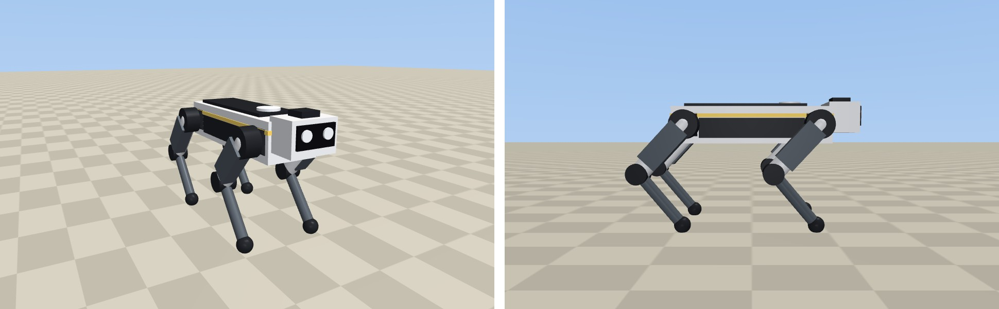
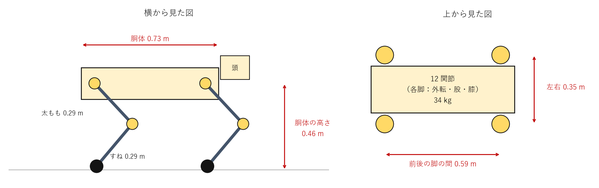
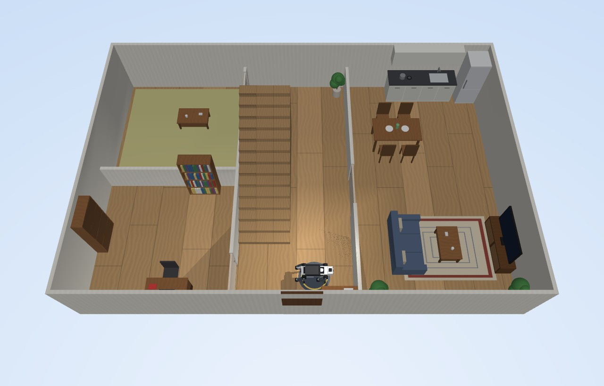
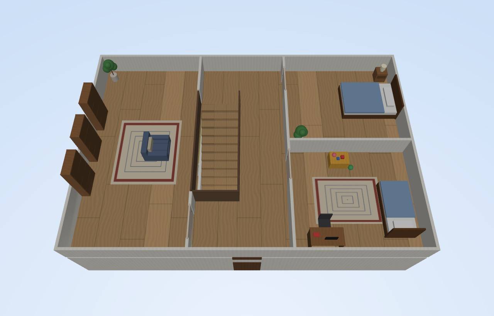
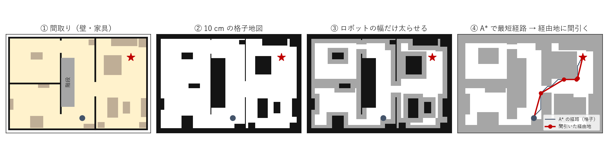
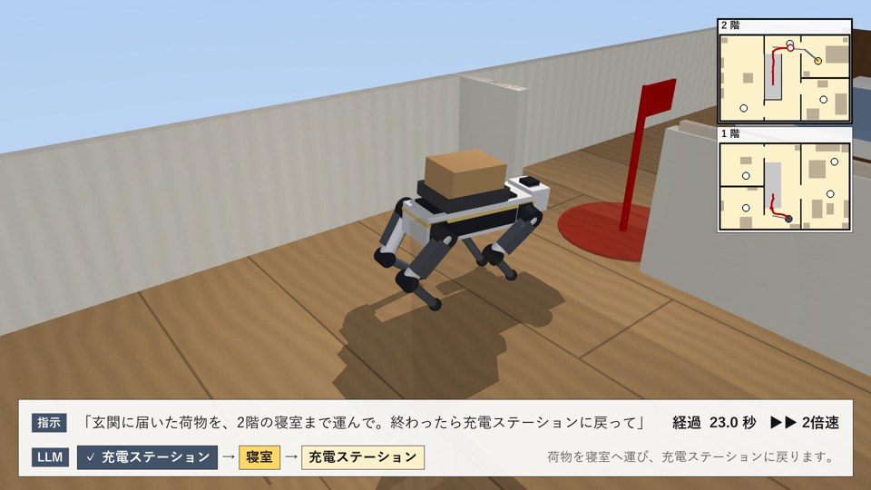
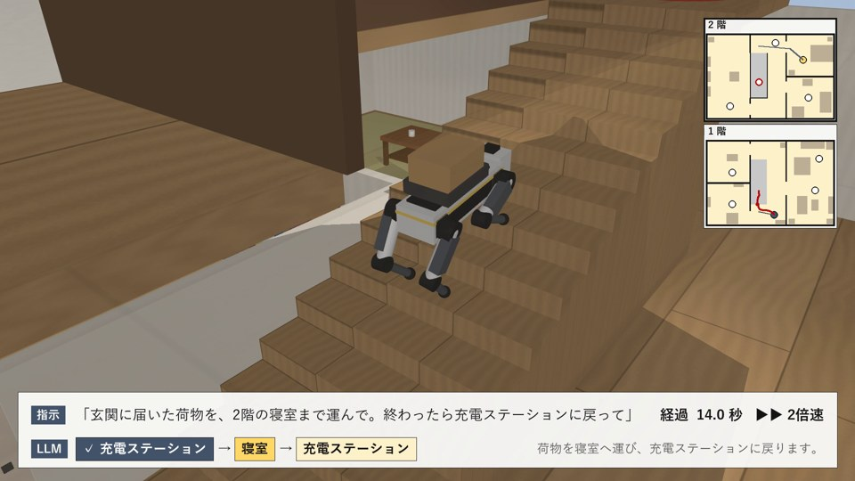
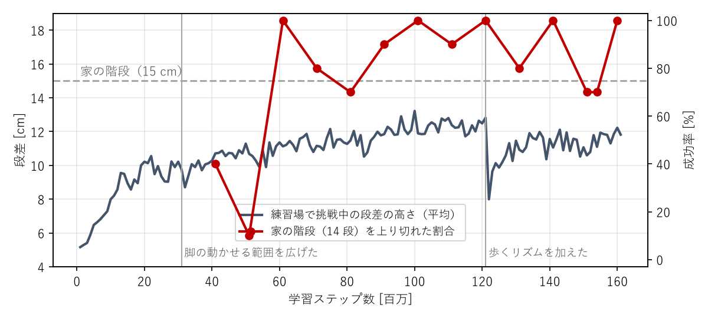

「玄関に届いた荷物を、2 階の寝室まで運んで」のような日本語の指示を出すと、犬型の四足歩行ロボットが 2 階建ての家の中を歩き、14 段の階段を上り下りして荷物を届けるシステムを、物理シミュレータ MuJoCo 上に作った。指示の解釈はパソコンの中で動く LLM（gemma4 / Ollama）、経路は間取り図からの A* 探索、歩行は強化学習（PPO）で得た「指令した速度で歩く」方策が担当する。ロボット・家・家具・自動ドアはすべて自作した。
家の中で荷物を部屋から部屋へ運ぶロボットを、専門知識のない人が普段の言葉で動かせるようにしたいと考えた。そのために次の 3 つの課題を、それぞれ次の方法で解いた。
| 課題 | 選んだ方法 |
|---|---|
| 一般の家には 2 階への階段や段差がある | 車輪ではなく四足歩行にし、 足元の地形を見ながら階段を上り下りする |
| 指示は普段の言葉で出したい | LLM で指示を「立ち寄る場所の順番」と 「荷物の受け取り先・届け先」に変換する |
| 家の間取りや会話を外部に送りたくない | 外部の API を使わず、 パソコンの中で動く LLM（Ollama）で解釈する |


| 体 | 胴体 0.73 m、脚 4 本（太もも・すね各 0.29 m）、各脚は外転・股・膝の 3 関節で計 12 関節、全体で 34 kg、立った胴体の高さ 0.46 m。寸法・関節・質量を MJCF（XML）で記述した。外装やセンサーユニットは見た目だけの部品（質量 0・接触なし） |
| 制御 | 関節の位置制御（比例ゲイン 230、最大トルク 115 N·m）。方策は「立ち姿勢からの関節角のずれ」（±0.8 rad）を 50 Hz で出力 |
| 観測（100 次元） | 胴体の速度・角速度・重力の向き、12 関節の角度と速度、直前の行動、速度指令（前後・左右・旋回）、足元 50 点の地面の高さ（前 0.9 m〜後ろ 0.45 m、左右 0.4 m）、歩くリズムの位相（周期 0.5 秒の sin・cos） |
| 報酬 | 加点：指令した速度に合う、足を地面から離して前へ振り出す（滞空時間）、4 本の足の高さが速歩の目標に合う（位相に合わせて対角の 2 本ずつ交互に 12 cm 上げ下ろす）。減点：上下の揺れ・傾き・関節の可動域の端・急な動き・トルク・足の滑り・振り出す足が段の上面から 15 cm の高さに合わない・胴体の高さのずれ・転倒（MuJoCo Playground の Go1 の報酬を参考に、足の高さを段の上面から測るよう変えた） |
| 練習場 | 60 m × 36 m の高さマップ（3 cm 間隔）を、難しさ 10 段階×地形 6 種類のタイル（6 m 四方）に分けた。上り階段・下り階段（段差 5〜18 cm、踏み面 26・30 cm）、坂（5〜25°）、凸凹 |
| 学習 | PPO（Stable-Baselines3）、32〜64 環境並列、方策・価値とも 512・256・128 の MLP。1 エピソード 20 秒の終わりに、2.4 m 以上進めたら 1 段難しいタイル、転ぶか 1 m 未満なら 1 段易しいタイルへ移す（カリキュラム学習）。エピソードの半分は上り階段のタイルから始め、上り階段を多めに練習させた。通算 約 1.6 億 ステップ。途中（3,100 万ステップ）で、膝を深く曲げられるよう関節角のずれの範囲を ±0.5 から ±0.8 rad に広げ、それまでの方策の出力が変わらないよう重みを換算して続きから学習した。さらに 1.2 億ステップの時点で、観測に歩くリズムの位相を加え（増えた入力の重みは 0 から始める）、速歩の報酬を足して 4,000 万ステップ続けた。最後の 9 個のチェックポイント（3,200 万〜4,000 万ステップ）を家の中の配達の 3 経路（各 10 回）で試し、成功が最も多かった 3,300 万ステップのものを採用した |


10 か所の場所（充電ステーション・リビング・キッチン・書斎・和室・寝室・子ども部屋・書庫・2 階のホールなど）の名前・階・座標をシステムプロンプトで与え、指示を {"route": [...], "pickup": ..., "dropoff": ..., "reply": "..."} の JSON に変換させる。Ollama の構造化出力（JSON Schema）で、場所の名前を列挙型に制限した。

階ごとに、壁・家具・手すりを 10 cm 格子の地図に描き、ロボットの幅の半分＋余裕（0.4 m）だけ太らせて A*（8 近傍）で最短経路を探し、見通しのきく点まで飛ばして経由地を間引く。階をまたぐときは、階段の下（1 階）と上（2 階）の通過点を必ず通す。経由地へは、向きのずれから旋回の速度、距離と向きから前進の速度を決めて方策に指令する。階段の上では、0.7 m 先の階段の中央線上の点へ向かう旋回と、中央線からの横ずれを戻す横方向の速度を指令し、前進は 0.8 m/秒の一定にする。
上り階段・下り階段のタイルの中央から、前進の速度指令 0.6 m/秒で歩かせ、15 秒以内に転ばずに中央から 2.6 m 先まで進めたら成功とした（各 20 回、向きはランダム）。
| 段差 | 上り：成功 | 上り：転倒 | 下り：成功 | 下り：転倒 |
|---|---|---|---|---|
| 5 cm | 90% | 0% | 100% | 0% |
| 6 cm | 90% | 0% | 100% | 0% |
| 8 cm | 95% | 0% | 100% | 0% |
| 9 cm | 95% | 0% | 100% | 0% |
| 11 cm | 100% | 0% | 100% | 0% |
| 12 cm | 95% | 0% | 95% | 5% |
| 14 cm | 100% | 0% | 100% | 0% |
| 15 cm（家の階段） | 60% | 5% | 90% | 10% |
| 17 cm | 20% | 15% | 80% | 20% |
| 18 cm | 0% | 20% | 35% | 65% |
デモの 2 つの指示を LLM が変換した経路と、2 階の子ども部屋へ行って 1 階へ戻る経路（直接指定）を、初期位置の乱数を変えて各 20 回実行した。全地点に順に着けば成功とした。
| 経路 | 成功 | 転倒 | 成功時の平均所要時間 |
|---|---|---|---|
| 充電ステーション → 寝室 → 充電ステーション | 85% | 15% | 50 秒 |
| キッチン → 和室 | 100% | 0% | 41 秒 |
| 子ども部屋 → 充電ステーション | 90% | 5% | 70 秒 |
家の階段（15 cm × 14 段）だけを取り出した試験では、採用した方策で 10 回中 7 回上り切った（学習の経過は下のグラフ）。



コード一式：https://github.com/azs4n10/pai-final-quadruped（README 参照）。主なファイル：gpu/make_assets.py（大型版のロボットと練習場）、stairs_cpu.py（学習環境）、train_big.py（学習）、home.py（2 階建ての家・経路計画）、planner.py（LLM）、home_demo.py（指示の実行と録画）、evaluate_big.py（評価）、make_video.py（動画）。
例：python home_demo.py --text "玄関に届いた荷物を、2階の寝室まで運んで"
使用ツール：MuJoCo 3.12 / Gymnasium 1.3 / Stable-Baselines3 2.9（PPO）/ PyTorch / Ollama（gemma4:e4b）/ Python 3.12。動画のデモは 2 倍速（画面に表示）。動画のナレーションは VOICEVOX ENGINE で合成した（音声：VOICEVOX:ずんだもん）。